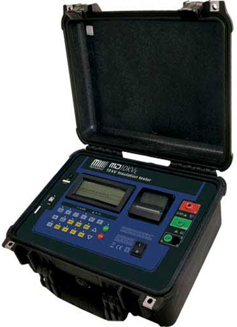
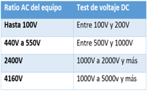
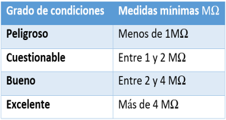
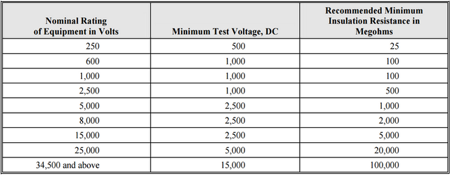
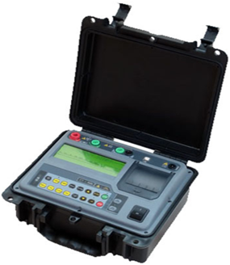

Medidor de aislamiento Megohmetro 10 KV y 1 KV
¿es importante el test de resistencia de aislamiento?
Más del 80% del mantenimiento eléctrico y electrónico envuelve evaluar la integridad del aislamiento, por lo que la respuesta es; ¡Sí, es muy importante!!
¿Cómo seleccionar el voltaje correcto en cada medición?
Para escoger el voltaje correcto en nuestros test hay normas que establecen, que parámetros mínimos debemos usar en nuestros test de aislamiento, dependiendo del sistema o tasación o categoría de voltaje del mismo. Normalmente en algunos equipos nos encontraremos el VMax establecido por el fabricante. Pero para hacernos una idea de que voltajes usar dependiendo del voltaje del equipo podemos referirnos a este cuadro de valores de voltajes recomendados para rutinas de mantenimiento de resistencia de aislamiento.
¿Cómo saber si lo que medimos con el megóhmetro está bien?
Se puede dar el caso de que no tengamos buenas referencias para comparar y así estar 100% seguros de nuestras medidas, por lo que podemos valernos de la siguiente tabla para interpretar nuestras medidas.
Conclusión
Para valores aceptables de aislamiento, depende mucho del equipo que estés testeando. En la industria los más experimentados usan su propia manera de interpretar la medida de 1megomio por KV. Pero para ser correctos hay que referirse a la norma internacional de equipos de test eléctrico NETA ( http://www.netaworld.org/standards/ansi-neta-mts )en la especificación de “Maintenance Testing Specification for Electrical power distribution equipment” que nos provee de las informaciones necesarias. En este caso para saber si nuestro aislamiento está correcto. Esta norma nos ofrece esta tabla.
Prueba de Resistencia de Aislamiento en transformadores
Se puede realizar varias pruebas dependiendo la construcción de los transformadores:
1.- Comparar el aislamiento que existe entre el bobinado de media tensión con respecto al bobinado de baja tensión cortocircuitando el lado de baja y media tensión.
2.- Comparar el aislamiento que existe entre el bobinado de baja tensión con respecto a tierra.
3.- Comparar el aislamiento que existe entre el bobinado de media tensión con respecto a tierra.
4.- La correspondiente al pararrayo.
En las pruebas descritas el valor mínimo es de 2 Giga ohmios para poder considerar que el equipo se encuentra en buenas condiciones. Esta prueba consiste en la prueba de tiempo - resistencia, la misma que considera:
1.- Razón de absorción dieléctrica
2.- Índice de Polarización
Prueba de tiempo - resistencia. - En un buen aislamiento la corriente de absorción dieléctrica decrece a medida que el tiempo de prueba transcurre, esto se traduce en un aumento en la resistencia de aislamiento con el tiempo (5-10 minutos). En un mal aislamiento, la corriente de absorción dieléctrica se mantiene durante el tiempo de prueba
a) “el índice de absorción” Es una extensión de tiempo-resistencia que es especialmente útil cuando se hace un historial del aislamiento. La razón de absorción dieléctrica es de dos lecturas de tiempo-resistencia:
IA = Ω 60 seg. / Ω 30 seg.
b) “el índice de polarización” La implementación más simple de la relación tiempo-resistencia para un aislamiento sólido es el Índice de Polarización. El resultado es un número puro y se puede considerar independiente de la temperatura.
La gran masa del equipo bajo prueba hace que el enfriamiento que se produce en 10 minutos sea despreciable. Lecturas son tomadas al minuto y a los diez minutos.
IP = Ω 10 min. / Ω 1 min.
Las pruebas de aislamiento se realizan a todos los componentes electricos que involucran un proceso de trabajo ya se transformador, motores, cables electricos, conexiones, nuevas o antiguos, etc.